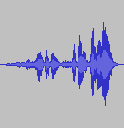

| Zurück zur Inhaltsangabe | Zurück zur Hauptseite |
| Einführung Schneiden, Kopieren und Einfügen Stille, Kopieren und Teilen Aufteilen und Submixe |
Ab hier findest du lustige Tastaturkombinationen in Rahmen wie dieser.
Diese sind sogenannte Shortcuts (Tastenkombinationen) zu den vercshiedenen Funktionen die dir erklärt werden. Das können zum Beispiel einzelne Tasten sein, wie ( SPACE) oder 2 und mehr Tasten die zusammen gedrückt werden müssen (e.g.CTRL+C). Ebenfalls kannst du eigene Kombinationen entwickeln. Wie dies geht, wird Ihnen hier beschrieben.
Die erste und am meisten benutzte Funktion ist Schneiden und einfügen (Cut und Paste). Das wurde bereits früher mit Kassetten gemacht und mit Daten am Computer ist es noch viel einfacher. Die nächste Seite beinhaltet Stille, Verdoppeln und Aufteilen. Eventuell möchten Sie noch mehr wissen, dann schauen Sie doch mal auf die Referenzseite .Dort sind noch mehr Programme aufgeführt, sowie Beispiele, wie man zum Beispiel Dateien verändert.
Voraussetzung für die folgenden Erläuterungen ist, daß Sie ein Projekt geöffnet und mindestens einen Audiotitel vorhanden ist.
So sieht das dann in Audacity aus :
Die Ansicht
Wie man oben sehen kann, ist das
Timeshift Modul  angewählt. Dieses wird benutzt um
den gesamten Audiotrack insgesamt zu verschieben.
angewählt. Dieses wird benutzt um
den gesamten Audiotrack insgesamt zu verschieben.
Der Cursor (die kleine blinkenden Linie quer über die Datei) verbleibt jedoch an der ausgewählten Stelle, so daß im Endeffekt das Audiomaterial hinter dem Cursor verschoben wird.
Nehmen wir nun an, daß Sie hier ein bischen aus der Mitte herausschneiden wollen, dazu müssen Sie als erstes diese Stelle auswählen.
Eine Auswahl treffen
Um eine Auswahl zu treffen, die benötigt wird um zu Schneiden, zu kopieren oder andere Tätigkeiten auszuführen, muss man das Selection tool  . Wenn es zur Zeit nicht aktiviert ist, klicken Sie bitte jetzt darauf.
. Wenn es zur Zeit nicht aktiviert ist, klicken Sie bitte jetzt darauf.
Nun drücken Sie bitte die linke Maustaste und ziehen die Maus über die Sekzion die bearbeitet werden soll.
Diese Auswahl ist nun dunkler markiert, als der Rest der Datei. Auch wenn die Markierung über den Anfang oder das Ende der Datei hinsausgeht, wird nur die Datei selber bearbeitet. Wiedergabe einer Datei funktioniert auch ausserhalb der eigentlichen Datei (dann hört man nur Stille).
Drücken Sie die Space Taste um sich die Markierung anzuhören.

Um die Auswahl auszuweiten oder zu verkleinern, drücken Sie bitte die SHIFT Taste und klicken auf die Stelle bis zu der die Auswahl erweitert bzw. verkleinert werden soll.
Wenn Sie auf eine Stelle klicken, die rechts der Mitte Ihrer Auswahl liegt, wird die rechte Grenze der Auswahl verschoben.
Schneiden der Auswahl
| Die Auswahl wird geschnitten indem man "Schneiden" vom Edit Menü auswählt ... | oder drücken Sie die Tastenkombination CTRL+X. |
| Vor dem Schnitt | Nach dem Schnitt |
 |
 |
Um diese Tätigkeit wieder rückgängig zu machen, wählen Sie bitte Undo (Rückgängig) im "Ändern Menü" oder drücken Sie CTRL+Z
Die Funktion Kopieren wird die Auswahl in die Zwischenablage kopieren.
Sie können ebenfalls Einfügen wählen, dann werden die Daten dort eingefügt, wo Sie mit dem Cursor eine Markierung gesetzt haben,
oder drücken Sie CTRL+V.
Einfügen ist das Gegenteil von Schneiden. Was man machen kann, ist zum Beispiel eine Auswahl zu kopieren, eine weitere Auswahl zu treffen und dann einzufügen. Die erste Kopie ersetzt dann die Daten der zweiten Auswahl, egal ob die Zeitlinien übereinstimmen oder nicht.
Während aller Tätigkeiten, wie oben beschrieben, zeigt dies Statuszeile (unten) 2 Dinge an : Die Startzeit und die Endezeit Ihrer Auswahl. Die Anzeige links in der Statuszeile, zeigt die "Projekt Rate:" an (normalerweise 44100) und der Wert kann verändert werden, wenn man darauf klickt und einen anderen Wert auswählt.
Alle Audiodaten werden dann mit der neuen Rate abgespielt. Sollte der Wert eines einzelnen Liedes unterschiedlich zur Projekt Rate sein, werden diese Lieder anfangen zu "stottern" wenn die Rate geringer als die Projekt Rateist. Audacity wird Sie auf diesen Umstand hinweisen, wenn die Werte unterschiedlich sind, aber nicht selbstständig die Rate ändern.
Gehe weiter zum Teil 3 - Stille, Verdoppeln und Teilen.